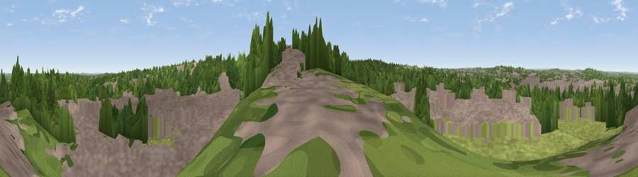

Viewpoint near Mansfield
#34169 in England · top 59% of its area beats it · near MansfieldThe view, rendered

A 360° render of this exact spot computed from the terrain model, tree cover and land cover — summer colours, afternoon light, calibrated against photographs of famous viewpoints. Real trees, hedges and buildings will differ in detail.
The panorama
Grey silhouette: terrain skyline in each direction (720 bearings, Earth curvature and refraction included). Dashed green: skyline with trees (+15 m) and buildings (+8 m) as obstacles. Blue strip: how far the ground is visible on each bearing.
Where the view opens
Wedge length = distance to the farthest visible ground on that bearing (vegetation-aware). Rings at 10, 25 and 50 km.
What fills the view
54% built-up · 30% woodland · 15% grassland · 1% cropland
Angular shares of the visible panorama (visual magnitude), not map area. Landscape diversity 0.45 (0–1 Shannon).
Key numbers
More beautiful places nearby
The staircase of upgrades: each row has a higher view potential than everything closer. Driving times are estimates from straight-line distance, calibrated against real road routing — check an actual route before setting out.
| Place | Direction | Drive | Score |
|---|---|---|---|
| Viewpoint near Mansfield | S · 0 km | ~1 min | 40.6 |
| Viewpoint near Clipstone | ENE · 3 km | ~8 min | 50.7 |
| Viewpoint near Blidworth | SE · 6 km | ~12 min | 52.1 |
| Viewpoint near Newstead | SSW · 9 km | ~17 min | 53.4 |
| Viewpoint near Stainsby | WNW · 10 km | ~19 min | 53.9 |
| Viewpoint near Meden Vale | NNE · 11 km | ~20 min | 65.2 |
| Burstheart Hill [Thoresby Colliery] | NE · 12 km | ~22 min | 69.3 |
| Crich Stand | WSW · 21 km | ~35 min | 73.0 |
53.13370, -1.18648 · source: screening · position refined by local search. Computed location — check access rights before visiting.